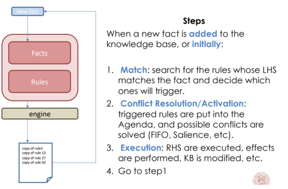

Rule-based systems
Rules are cool because they are easy to understand and allow automation of a lot of processes (like Business Process Management ). There are two main way to check with rules, given a formula , we can use:
- Backward chaining: start from consequences and look for premises that make the consequence true
- Forward chaining: start from premises and check the consequences.
Rules, usually, looks like formulas and the standard reasoning method is Motus Ponens.
Dynamic prospective
The production rule system allows for a dynamic insertion of new rules. The rule insertion trigger a reasoning process on every rule up to that point until a quiscence state is reached.
Production rules systems allow to explicitly have side effects in the RHS, both on the external world and on the knowledge base. The effects are the insertions/deletion of facts or the retriggering of rules (as a consequence). We can have several problems due to the inconsistency of new facts with existing ones, due to the triggering of more rules, due to side effects or due to deletes a facts. 
Rete algorithm
It is a pattern matching algorithm to implement rule-based system. it builds the rule system as a graph with nodes representing correspond with a left end side (premises) of a rule and arcs represent premises to consequences. This kind of representation of the system allows for a more optimized application of the rules since you just need to follow the paths containing you facts.
An important tool for rule-based system is Drools